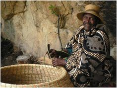

Lesotho is a very creative nation and it uses nature things like;
Woven baskets:They use grass together with a cotton twine and the grass is rolled to make it easier to use and coiling them together until they make a desired shape.  more information
Pottery:They use pottery for making bowls that are used for everyday household use.While this days they are made in a factory for decoration
Beadwork:They create necklaces which are made out of clay beads.These are often worn for cultural events and can also incorporate plastic and glass beads.